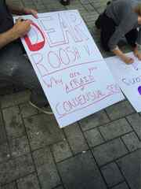

< < < Back
University Of Manchester Bans Breitbart’s Milo Yiannopoulos From Debate On Censorship – Return Of Kings
Real-world news is becoming so absurd that The Onion is practically superfluous. Case in point: a prominent journalist being invited by a university to debate censorship and free speech, only to be banned at the last minute for “inciting hatred.”
That’s precisely what happened to Breitbart editor Milo Yiannopoulos recently. According to Breitbart, both Yiannopoulos and his debate opponent, feminist Julie Bindel, were banned from participating in an upcoming campus debate on free speech at the University of Manchester because of their views on transsexuals:
As such, this undermines the principles of liberation enshrined in the Students’ Union, as outlined in the Safe Space policy. We believe these views could incite hatred against both trans* people and women who have experienced sexual violence. As we believe it is probable these views would be aired in this discussion should he be allowed to speak on campus, we have no choice but to ban him.
Additionally, the Students’ Union also referred to Yiannopoulos as a “rape apologist” who has made comments “lambasting rape survivors.”
Beyond the already sick irony of banning someone from a free speech debate with such Orwellian reasoning, the University of Manchester’s student union has shown horrendous judgment when it comes to who they allow to speak. The union was unable to come to a decision on whether to sanction or condemn the terrorist group ISIS and also invited a radical Muslim preacher who calls for gays to be executed to speak, yet they barred both Yiannopoulos and Bindel—themselves homosexuals—from having a debate on free speech.
Safe Spaces Make For Dull Minds
This decision on the part of the Students’ Union is part of a general trend towards censorship on college campuses across the West. By definition, colleges and universities are supposed to be places of free inquiry, where young minds are equipped with the tools they need to think critically about the world at large. However, colleges have increasingly moved in the opposite direction, coddling students and stifling non-leftist points of view, oftentimes to the point of absurdity.
For example, two years ago, a number of universities in the U.K. banned Robin Thicke’s song “Blurred Lines” for its “rapey” lyrics. Additionally, “trigger warnings” (notices informing readers that a work could potentially be traumatizing), once limited to feminist blogs, are actually being incorporated into class syllabi now, as a salve to students who might have a panic attack from reading racial slurs in Adventures of Huckleberry Finn.
College students’ prissiness and intolerance of non-PC viewpoints and language is so bad that personalities across the political spectrum are taking notice. Comedians such as Jerry Seinfeld and Chris Rock—themselves left-wing—have announced that they no longer perform on college campuses because students will become angry the minute they wander off the politically correct plantation.
According to Greg Lukianoff, president and CEO of FIRE (Foundation for Individual Rights in Education), college speech controls have become so stringent that merely saying something like “America is a melting pot” is viewed as a minor transgression by many students. Indeed, even using the word “crazy” is viewed as “ableist,” a sign that political correctness has gone out of control in colleges.
The Extinguishing Of Free Speech

Modern academia is breeding a class of college graduates who are not only dismissive of the hard-won right to free speech that many Westerners have enjoyed, they are actively hostile to any viewpoints they disagree with. No better evidence of this can be found in the response to Roosh’s “State of Man” tour dates in Canada this past summer. Feminists colluded with the Canadian media and local government in Montreal and Toronto to shut down Roosh’s lawful speeches based entirely on lies about his political beliefs.
College leftists have become so extreme that they are increasingly willing to break the law in order to prevent others from exercising their right to free speech. Recently, feminist protesters attempted to disrupt a lecture by Reason’s Cathy Young at St. Paul University in Ottawa, pulling a fire alarm and arguing with a policeman who told them to move their protest or risk arrest. It’s only a matter of time before these SJWs explode into outright violence.
Ultimately, what happened to Milo Yiannopoulos and Julie Bindel is just a symptom of a greater sickness in Western academia. By mollycoddling young minds and shielding them from “problematic” viewpoints, academia is aiding the creation of a generation of monsters.
It remains to be seen whether the defenders of free speech will be able to mount a defense against these easily-triggered Brownshirts.
Read Next: Student Accused Of Rape By Emma Sulkowicz To Sue Columbia University